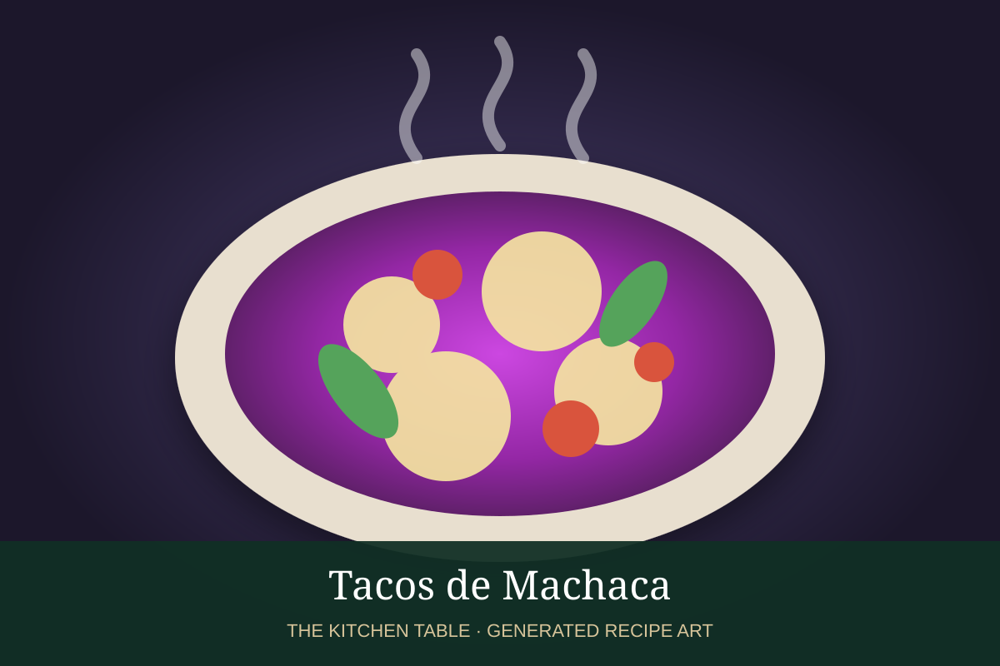

← Back to all recipes
BREAKFAST · NORTHERN MEXICAN
Huevos con Machaca
Scrambled eggs with shredded dried beef, tomato, onion, and chile.
25 minServes 4

Photo: Slender Kitchen
Ingredients
- 8 oz machaca
- 8 eggs
- 1/2 onion, diced
- 2 Roma tomatoes, diced
- 1 jalapeño, minced
- 1 tbsp oil
- Warm flour tortillas
- Salsa
Preparation
- Cook onion and jalapeño in oil.
- Add tomato and cook until juicy.
- Stir in machaca and warm through.
- Add beaten eggs and scramble until softly set.
- Serve with flour tortillas and salsa.
Related Mexican Recipes
Tacos de Machaca → · Frijoles Refritos → · Salsa Roja → · Huevos a la Mexicana →